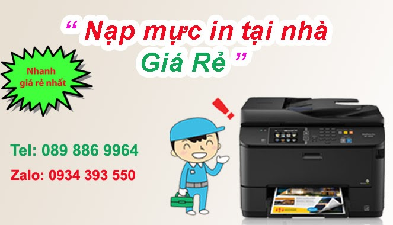
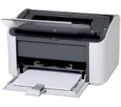
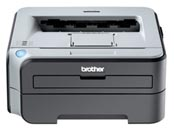
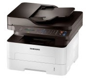
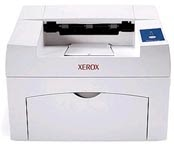
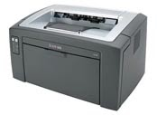
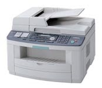
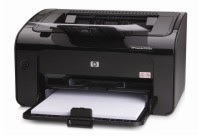
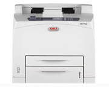

Tin Học Hi-Tech — Nạp mực máy in tại nhà TP.HCM
Nạp Mực Máy In Tại Nhà - Sửa Máy In Tận Nơi - Sửa Máy Tính Giá Rẻ
Công ty tin học hi-tech tại Tphcm chuyên bơm mực máy in tại nhà các loại Hp - canon - samsung - brother - ricoh... nạp mực máy in trắng đen, bơm mực máy in màu các loại, nhận nạp mực tại tất cả các quận huyện Tphcm.
Trung Tâm Mực In Hi-Tech
ĐT: 089 886 9964 - Zalo: 0934 393550
Nạp mực máy in tại nhà – Sửa máy in tận nơi
Dịch vụ bơm mực máy in TpHCM: Cam kết nhanh nhất, giá rẻ chế độ bảo hành uy tín

Bơm Mực Máy In Tại Nhà Tp HCM
1. Nạp mực máy in tận nơi Hp - Canon - Samsung - Brother
Nạp mực máy in tận nơi laser trắng đen các loại
Đổ mực máy in phun màu liên tục tại nhà
Bơm mực thay chíp máy in Laser màu : Hp - Canon - Brother
Dịch vụ sửa máy in tận nơi Tphcm tại các quận 1, 3, quận 5 ... Tân Bình, Tân Phú
Ngoài ra Hitech còn sửa máy tính, hệ thống mạng và tổng đài điện thoại nhanh.
Sửa chữa máy in giá rẻ như: không in được, kẹt giấy, không load giấy, rách bao lụa....
2. Lợi ích nạp mực máy in tại nhà Của Hi-Tech ?
- Nạp mực máy in tận nơi, sửa máy in tại nhà khách hàng
- Dịch vụ bơm mực máy in tại nhà uy tín chất lượng.
- Hi-tech luôn làm việc thứ 7, chủ nhật và ngày nghĩ lễ - 24/7
- Nạp mực máy in giá rẻ - tiết kiệm chi phí cho khách hàng.
- Sửa máy in tận nơi nhanh và đảm bảo uy tín
- Hitech Luôn nhận trách trách nhiệm nếu có sự cố xẩy ra.
- Nạp mực máy in, sửa máy in, máy tính luôn đi kèm với chế độ bảo hành.
- Bản in luôn đẹp sau khi nạp mực và in test.
- Chỉ nhận thanh toán khi khách hàng hài lòng về chất lượng và dịch vụ
- Hướng dẫn, hỗ trợ sửa miễn phí qua điện thoại
- Với công ty, doanh nghiệp có thể thanh toán công nợ vào cuối tháng.
3. Chất Lượng thay mực in của Hi-Tech
Với đội ngũ kỹ thuật nhiều năm kinh nghiệm trong lĩnh vực máy in và máy tính, rãi đều tại các quận huyện Tp HCM như: quận 1, quận 3, quận 5, 6, 10, 11, quận Phú nhuận, quận tân bình, quận Tân phú ...
chúng tôi luôn mong muốn đem đến dịch vụ nạp mực máy in tận nơi nhanh & chất lượng nhất, cùng với chế độ hậu mãi và bảo hành Uy tín.
Nắm bắt nhu cầu cần nạp mực máy in tại nhà nhanh cho chất lượng đẹp của Quý công ty, doanh nghiệp cũng như những cá thể khác. HiTech computer luôn nhắc nhở mỗi KTV phải luôn lấy quy tắt " khách hàng là thượng đế " để phục vụ tốt nhất. có được niềm tin của quý khách hàng là sự thành công của chúng tôi
Luôn có kỹ thuật túc trực tại quận Tp HCM, Khi quý khách gọi sẻ có kỹ thuật đến ngay trong vòng 20'
BẠN cần nạp mực máy in GẤP 24/7 tại HCM ? - thông tin ở đây
Nạp mực máy in GIÁ RẺ TP HCM - chỉ còn 90K
Khi hết mực hoặc máy in gặp sự cố, hãy gọi cho chúng tôi: => 089 886 9964 <=
Nạp mực máy in tại nhà cam kết : Nhanh - Giá Rẻ
- Nhanh: Chúng tôi sẽ có mặt nhanh trong 30 phút sau khi Quý khách liên hệ
- Rẽ: Linh kiện mực in, máy in giá rẽ hơn so với thị trường
- Chất lượng: Nạp mực máy in chất lượng, làm giảm tỉ lệ hao mòn linh kiện
- Phục vụ tận nơi: Phục vụ tận nơi với bất ký sự cố nào xãy ra với máy in, mực in
- Công nợ: Quý công ty có thể thanh toán 1 lần vào cuối mỗi tháng
- Hỗ Trợ: Chúng tôi sẽ hỗ trợ miễn phí qua teamview, điện thoại với những sự cố mà quý khách có thể sử lý
- Làm việc 24/7: kể cả thứ 7, chủ nhật và ngày lễ.
Với đội ngũ kỹ thuật viên nhiều năm kinh nghiệm, tay nghề cao chúng tôi luôn mong muốn mang đến khách hàng sự hài lòng và yên tâm nhất.
Bảng Giá Nạp Mực Máy In
Bảng Giá Thay Mực Máy In Tận Nơi: >> Bảng Giá Bơm Mực <<
Khi nạp mực máy in brother tại nhà khách hàng, kỹ thuật viên của Hi-tech sẻ reset hộp mực, reset máy in, reset trống drum của quý khách hàng đầy đủ, vệ sinh hộp mực sạch sẽ, cho chất lượng bản in đậm đẹp, in đủ số trang trong hộp mực
| Loại máy | Giá |
|---|---|
| Nạp-bơm mực máy in tận nơi Hp/Canon laser 12A/35A/49A/05A/15A.. (HP 1100, 3200, 1150, 1200, 1300, 1020, 1160, 1320, P2015, Canon LBP-810, 1120, 1210, 2900, 3200, 3300, P1005, P1006, P2015, M1522n, 1522nf, P1505, P1505n, 2035, 2055..) | 90.000 vnđ/ bình |
| Nạp-bơm mực máy in HP/Canon laser A3 | 210.000 vnđ |
| Nạp-bơm mực máy in Samsung ML-1160, 1710, 2010, 1640, 4200, 4300.. | 120.000 vnđ |
| Nạp-bơm mực máy in Lexmark Optra E120, E210, E220, E250, E350, E352, E460, E360, E260, X364, X363.. | 120.000 vnđ |
| Nạp-bơm mực máy in Xerox Phaser 3110, 3210, 3116, 3117, 3121, 3122, 3124, 3130, 3120/ Epson EPL 5500, 5700, 5800, 5900, 6100, M-1200 PE1200 | 120.000 vnđ |
| Nạp-bơm mực máy in Xerox Phaser 3110, 3210, 3116, 3117, 3121, 3122, 3124, 3130, 3120, 3125, 31503200, MFP 3220, 3250; Xerox WorkCentre PE 16, 3119 | 120.000 vnđ |
| Nạp-bơm mực máy in Brother HL-2030, 2040, 2070N, 2140, 2170, 5340, 5350, 5370, 5380, 1650, 1850, 1870, 5040, 5050, 5070, DCP-7020, 7220, 7225, 7420, 7820, 9680, 9180, 9160, 9030, 9070 | 130.000 vnđ |
| Nạp-bơm mực máy in Panasonic KX-FLB 801, 811, 851, KX-FA 85 | 150.000 vnđ |
Bơm Mực Máy In TPHCM, Nạp mực in tại nhà, Thay mực in tận nơi giá rẻ
Dịch vụ nạp mực máy in tận nơi HCM của chúng tôi chuyên: Nạp các loại mực máy in HP, Canon, Brother, Xeroc, Samsung, Panasonic... cung cấp linh kiện mực in, máy in chính hãng giá rẻ cho cá nhân, doanh nghiệp.
BƠM MỰC MÁY IN TẬN NƠI HCM => Hotline 0934.39.35.50
- Mực chúng tôi nạp là mực loại 1 nên bản in rõ đẹp đẹp
- Với đội Ngũ KTV nhiều năm kinh nghiệm cùng sự nhiệt tình, chu đáo sẽ làm hài lòng Quý khách
- Vệ sinh máy in, hộp mực sau khi đổ mực máy in
- Chế độ bảo hành tận nơi tận tụy, uy tín.
- Khách hàng sử dụng dịch vụ thường xuyên sẽ có chế độ ưu đãi đặc biệt.
Cửa hàng nạp mực in tại quận tân bình
Công Ty Bơm Mực Máy In Tại Nhà Quận 5
Shop Nạp Mực Máy In Tận Nơi Quận 6
Cửa hàng bơm mực máy in tại Bình Chánh
bơm mực máy in " SIÊU TỐC " quận tân bình
Các dịch vụ liên quan đến nạp mực máy in tận nơi HCM
- Nạp mực máy in màu: cho các dòng máy HP, Canon, Samsung, Epson, Brother, Lexmark, Xerox...
- Sửa chữa tất cả các lỗi máy in như: Thường xuyên kẹt giấy, Trang in bị nhăn, Máy phát ra tiếng kêu lớn...
- Bơm mực cho các dòng máy in phun.
- Lắp đặt hệ thống mực in liên tục.
- Thay film máy fax, sửa chữa máy scan, photo...
- Cung cấp linh kiện máy in chính hãng: Trống in, gạt mực, drum máy in, trục từ, bao lụa...
- Cung cấp hộp mực chính hãng
- Reset chip mực in
- Các giải pháp về in ấn
- Mua bán, trao đổi linh kiện máy in, mực in, máy in chính hãng
Ngoài ra chúng tôi còn có các dịch vụ như:
- Sửa máy tính, máy in tận nơi
- Thay mực máy in phun màu
- Cài đặt windown và các ứng dụng văn phòng
- Nâng cấp, sửa chữa máy tính PC - Láptop
- Vệ sinh, tối ưu, diệt virus cho máy tính
- Cung cấp linh kiện máy tính, máy in.
- Cài đặt mạng lan, chia sẻ dữ liệu máy tính, máy in
- Lắp đặt sửa chữa hệ thống mạng lan - internet
- Lắp đặt sửa chữa hệ thống tổng đài điện thoại, camera quan sát
Luôn có kỹ thuật túc trực tại các quận Tp. HCM như: Quận 1, Quận 3, Quận 5, Quận 6, Quận 10, Quận 11, Quận tân bình, Quận tân phú ....
Hổ trợ sửa chữa miễn phí qua phần mềm teamviewer, điện thoại 0934 39 35 50
Hổ trợ công nợ, cuối tháng thanh toán 1 lần.
Với chế độ ựu đãi cũng như sự hổ trợ tốt nhất đối với khách hàng. Kỹ thuật viên luôn tận tâm, nhiệt tình, chu đáo.


Công ty bơm mực in tại nhà các loại
Bơm mực máy in Hp giá rẻ
ty bơm mực máy in hp : Nhận bơm tất cả các dòng máy in hp tận nơi như: hp laserjet 1010, Hp M125, HP 12A ... Nạp mực màu Hp laserjet Pro M180 / M181, Hp laserjet Pro M280/281, Hp Pro M254DW, Hp M176DN, Hp laser 177DW, Hp Cp 1025 ...
Nạp mực máy in Hp trắng đen các dòng như: HP 12A, Hp 13a, Hp 35A, Hp 48A, Hp 85A ... giá thành bơm mực máy in hp trắng đen tại tphcm giá chỉ khoản từ 90k - 150k tùy từng loại máy in. Mực nạp cho các dòng hp trắng đen, máy in hp màu của chúng tôi là loại mực nhập từ Japan, USA, malaysia ...
Thay mực máy in canon tận nơi Tphcm
Máy in canon là dòng máy in phổ biến trên thị trường, tại việt nam canon là một trong những hãng máy in thịnh hành, giá nạp mực in canon tại tphcm cũng tương đối rẻ, việc nạp mực máy in canon cũng dể dàng
Các loại máy in canon phổ biến như : canon laserjet 1020, Canon LBP 2900, Canon LBP 6230, Canon laserjet pro181
Bơm mực máy in Brother
Công ty Hi-Tech chuyên bơm mực máy in brother giá rẻ tận nơi, tại nhà khách hàng uy tín, Mực nạp brother của Hi-Tech là mực loại 1 được nhập từ Japan, cho chất lượng bản in sắc nét, đậm đẹp,
Các dòng máy in brother chúng tôi thường nạp như: Brother DCP 2050, Brother HL L2701, Brother L2321D , Brother HL 6950, nạp mực brother 2385, Bơm mực brother MFP B7535DW



Nạp Mực Máy In HP · Nạp Mực Máy In Canon · Nạp Mực Máy In Brother · Sửa Máy In Samsung · Nạp Mực Máy In Xeroc · Nạp Mực Máy In Lexmark · Nạp Mực Máy In Panasonic · Nạp Mực Máy In Epson · Nạp Mực Máy In Oki
Các Dịch Vụ Liên Quan:
Nạp mực máy in canon tận nơi quận 11 · Bơm mực máy in A3, A4 ở tphcm · Bơm mực máy in màu các loại như Hp, Canon, Brother ...Q5 · Thay mực máy in Brother nhanh ở tp hcm · Nạp mực máy in Samsung ở tp hcm · Đổ mực máy in Recoh tận nơi tp hcm · Nạp mực máy in Xeroc tại nhà tphcm · cửa hàng nạp mực máy in Lexmark ở quận Bình Tân tại tp. hcm · Công ty bơm mực máy in tại nhà giá rẻ nhất tại tphcm · Đổ mực máy in các loại Panasonic, xerox, recoh quận Gò vấp · Dịch vụ đổ mực máy in tại tphcm giá rẻ · Cần bơm mực máy in gấp tại quận tân bình · cần nạp mực máy in gấp - liên hệ: 0934393550 · Nạp mực máy in canon LBP 2900 chỉ 90K
Ngoài đổ mực máy in giá rẻ tại nhà, còn có các dịch vụ như:
Sửa máy in bị kẹt giấy ở quận tân bình · Sửa máy in báo lỗi đèn đỏ, không in được tại quận tân bình · Sửa máy in không láy giấy lên được tại tp. hcm · Sửa máy in bị hư không in được tại nhà quận 1 · Sửa máy in không lên nguồn tại nhà tp hcm · Sửa máy in bị lem mực tận nơi tp hcm · Sửa máy in không nhận mực in tại quận 5 Tp. HCM · Sửa máy in HP gấp tại quận tân bình tp hcm
Công Ty Dịch Vụ Nạp Mực Máy In giá rẻ Tại Các Quận Tp HCM
- Nạp Mực Máy In Quận 1: 24/7 Nhanh - Rẻ - Uy Tín
- Nap Mực Máy In Quận 3: 24/7 Nhanh - Rẻ - Uy Tín
- Nạp Mực Máy In Quận 5: 24/7 Nhanh - Rẻ - Uy Tín
- Nạp Mực Máy In Quận 6: 24/7 Nhanh - Rẻ - Uy Tín
- Nạp Mực Máy In Quận 8: 24/7 Nhanh - Rẻ - Uy Tín
- Nạp Mực Máy In Quận 10: 24/7 Nhanh - Rẻ - Uy Tín
- Nạp Mực Máy In Quận 11: 24/7 Nhanh - Rẻ - Uy Tín
- Nạp Mực Máy In Quận Bình Thạnh: 24/7 Nhanh - Rẻ Nhất
- Nạp Mực Máy In Quận Tân Bình: 24/7 Nhanh - Rẻ - Uy Tín
- Nạp Mực Máy In Quận Tân Phú: 24/7 Nhanh - Rẻ - Uy Tín
Một Số Thủ Thuật Sửa Máy In:
- Hướng Dẫn Cách Nạp Mực Máy In HP Laser m102
- Hướng Dẫn Cách Reset Mực Máy In Samsung SCX 4300 Hiệu Quả
- Lỗi Toner Empty Drum Life máy in Panasonic 1500
- Hướng Dẫn Sửa Lỗi Máy In Không In Được
- Hướng Dẫn Sửa Lỗi Print spooler service not runing
- Hướng Dẫn Reset Mực Máy In Epson T50 T60 1394 1400
- hướng dẫn cài đặt in 2 mặt cho máy canon 3300
- Hướng Dẫn Reset Máy In Phun Canon Toàn Tập
- Máy In Bị Nhòe Mực Tại Sao ?
- LỖI MÁY IN BỊ KẸT GIẤY



Nạp mực máy in tận nơi Tp.HCM · Bơm mực máy in tại nhà Tp.HCM · Đổ mực máy in Quận Tân Bình · Nạp mực máy in Quận Tận Nơi Q. 10 · Nạp mực máy in giá rẻ tại HCM · Sửa chữa máy tính tận nơi Tp.HCM · Sửa chữa máy in tận nhà Tp. HCM · Cài đặt máy tính laptop tận nơi HCM · Sửa máy in tận nơi HCM giá rẻ · Bơm mực máy in màu
Dịch vụ sửa máy tính tận nơi giá rẻ, dịch vụ nạp mực máy in tận nơi cho các dòng HP, Canon, Brother, Panasonic, Samsung Xeroc, đổ mực máy in phun cho các dòng HP, Canon, Epson, Brother... Nạp mực giá rẻ tại Tp. HCM. Sửa máy tính tại nhà, cài đặt windown tận nơi, vệ sinh laptop, sửa laptop, Sửa máy in tận nơi.


